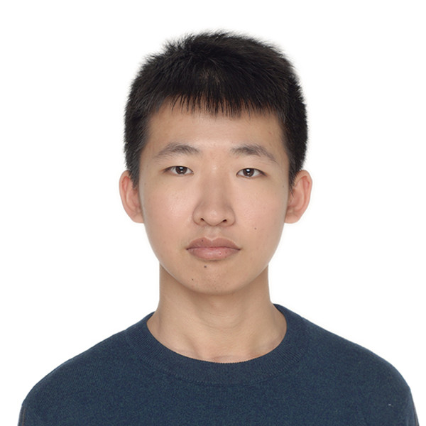
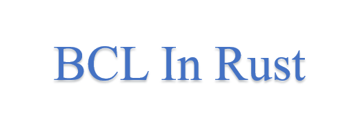

|  |
Hi, my name is Jiakun Yan. I am now a junior student in Shanghai Jiao Tong University, China, majoring in Computer Science. I am also a member of Zhiyuan Honors Program of Engineering. I am currently exchanging in University of California, Berkeley. |
| I am a man adoring rationality and freedom. Amazed by the beauty in logic and infinite possibility, I chose computer science as my major. Deciding to devote my life to an area I really love, I have explored different areas of computer science, namely, artificial intelligence, computer network, and parallel computing in chronological order. In the process of my exploration, I found my interest gradually converging to computer system and very likely distributed system and parallel computing. Trying to accumulate more experience and apply to a Ph.D. program, I am now searching for research internships in summer and fall, 2019 and considering a gap year. |
|
jiakunyan1998[AT]gmail[DOT]com jack.jk.yan[AT]berkeley[DOT]edu |
|
Shanghai Jiao Tong University, China, from Sep. 2016 to present |
|
University of California, Berkeley, USA, from Jan. 2019 to present |
|
Due to the process of exploring my interest, I have a cross background in parallel computing, computer network, and artificial intelligence. My current research interest lies in:
More broadly, I am interested in building fascinating system to make life easier and happier. |
| Jiakun Yan, Jingzhu Shao, Zhen Huang, Yanzhou Xiang, Yutong Liao, Ruohan Hu, Jin Qi, Shuo Jiang, "A vibrating alarm clock based on pressure sensors", Utility model ZL 2017 2 1300094.X, China[pdf] |
|  |
Berkeley Container Library in Rust The Berkeley Container Library(BCL) is a cross-platform C++ library of distributed data structures. Rust is an increasingly popular language as a competitor to C++ for its safety guarantees and streamlined syntax. In this project, we are developing a version of BCL in Rust language, and try to provide some safety guarantees to BCL with Rust. |
 |
High speed transmission system with Cellular and Wi-Fi hotspot Cellular network is relatively long-distance but low-speed, while Wi-Fi is relatively short-distance but high-speed. In this project, we design a high-speed parallel transmission system combining Cellular and Wi-Fi hotpot. In this system, a host phone opens its Wi-Fi hotpot and connects several relay phone. Then it delivers its data to relay phones by wifi-hotspot and they transmit data parallelly with Cellular network. In this project, I wrote a MIMD(Multiple Instruction Stream Multiple Data Stream) program in Java language to handle multiple network interfaces and implement the system on Android platform by myself. |
 |
PPT Ctrl: an interactive PPT control APP PPT Ctrl is a project controling PPT by a smart phone APP in an interactive way. It combines the functions of tradtional Powerpoint clickers with the advantages of smart phones, and thus becomes a easy-to-use and powerful PPT control device. PPT Ctrl enables page switching, highlighting, magnifying, and drawing while real-time presentation screen displays on smart phone simultaneously. I implemented this system from scratch in a team of four students as the team leader. The system is based on Qt and Android platform. We have submitted our project to Shanghai University Student Computer Application Ability Competition, 2019. |
 |
Video clip retrieval by nature language
The task is that, given a video and a query sentence, find the clip in the video described by the sentence. We propose a spatio-textual coattention network to establish the interactions between words and spatial regions. We evaluated on DiDeMo dataset, and outperforms state-of-the-art methods by a significant margin on both Rank@1 and Rank@5. Our work has been submitted to ICCV 2019. I am the second author. |
| Fan Hsu-chi Scholars, Shanghai Jiao Tong University, 2018 |
| National Scholarship, Ministry of Education of China, 2017 |
| Zhiyuan Honorary Scholarship, Shanghai Jiao Tong University, 2016, 2017 and 2018 |
| Meritorious Winner, Mathematical Contest in Modeling, 2018 |